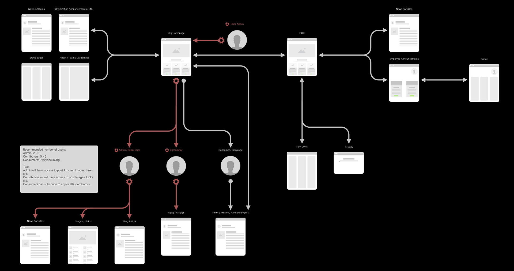
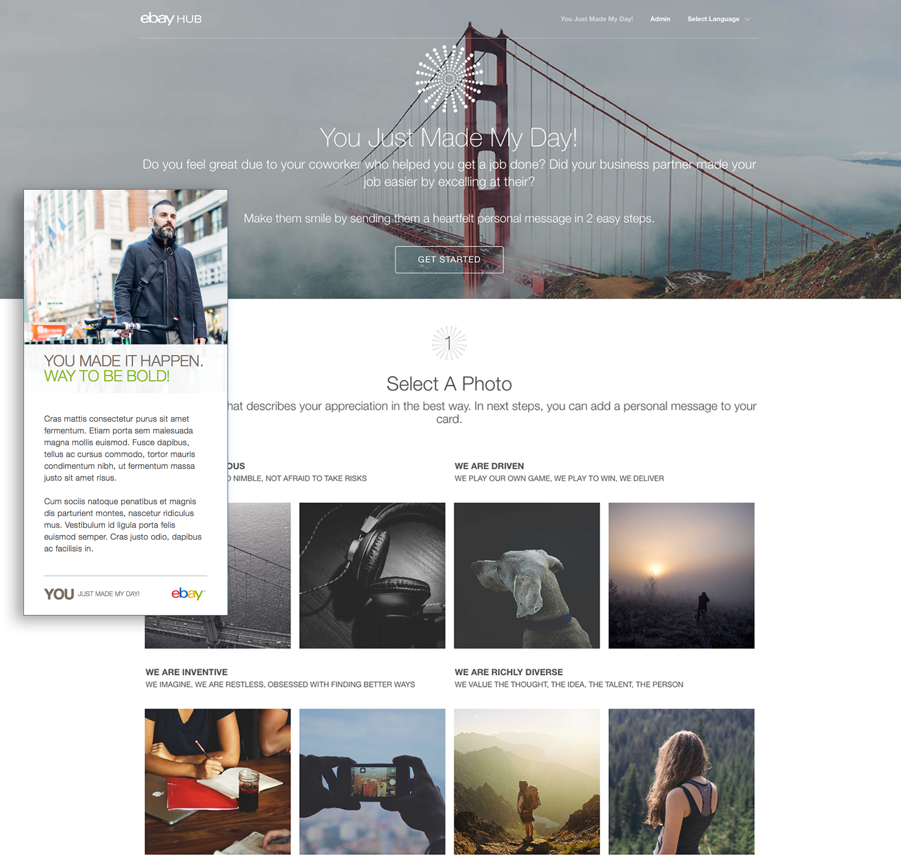

Case Study
eBay HUB
Designing You Just Made My Day, an employee recognition experience that made appreciation easier to share and more visible across eBay.

My Role

Employee Recognition HUB
I led You Just Made My Day inside eBay HUB, creating a fast way to recognize colleagues while giving managers visibility into team contributions.
- UX and UI design from concept through delivery
- Created wireframes, high-fidelity prototypes, and final flows
- Partnered with HR, Internal Communications, and Engineering
- Aligned the feature with employee engagement goals
- Worked with Brand to keep the experience warm and inclusive
- Integrated the feature into the existing employee portal
Credits / Team: HR, Internal Communications, Engineering, Brand
Tools: Sketch, Photoshop, internal prototyping tools, workflow mapping
Background
Making everyday appreciation visible across teams.
Recognition already happened at eBay, but it was often buried in email, chat, or small team circles.
At eBay’s scale, meaningful contributions crossed teams and time zones, while recognition often disappeared before reaching a wider audience.
The opportunity was to make appreciation easy, genuine, and visible without creating a heavy HR workflow.
How might we make recognition fast, meaningful, and scalable?
Problem
Recognition was happening, but it was fragmented.

eBay HUB supported internal communication but lacked a dedicated recognition experience.
- Recognition stayed siloed within teams
- Managers lacked visibility into positive contributions
- Existing channels felt informal or disconnected
- No lightweight, repeatable system worked across locations
- The experience needed to feel authentic and uplifting
The issue was not goodwill. It was making recognition easy to give, see, and remember.
Discovery
Understanding what made recognition feel genuine.

System mapping showed where recognition could fit within HUB.
I worked with HR and Internal Communications to understand engagement goals, existing programs, and portal usage.
Employee conversations revealed how appreciation was shared and what made it meaningful.
- Aligned with HR and Internal Communications on culture goals
- Interviewed employees across departments
- Identified what made recognition feel genuine
- Found the strongest portal entry points
- Kept the experience visible but non-disruptive
The key insight: adoption depended on speed and sincerity.
Strategy
Designing for speed, visibility, and authenticity.
The strategy made recognition effortless while adding enough structure to create organizational value.
The flow needed to take under a minute, reach the recipient and manager, and feel more celebratory than an HR form.
- Make recognition fast and lightweight
- Increase visibility for recipients and managers
- Preserve personal authenticity
- Create an uplifting visual experience
- Scale the pattern across eBay HUB
Recognition was positioned as a meaningful social interaction—not a formal review process.
Solution
A simple recognition flow inside eBay HUB.

The final experience was fast, celebratory, and integrated into daily work.
Employees could find a colleague, choose a category, and write a short message on one screen.
The lightweight flow reduced friction while preserving context and visibility.
- One-screen recognition flow
- Fast colleague search and selection
- Recognition categories for context
- Short personal message
- Recipient email and portal notifications
- Manager visibility
- Archive of sent and received messages
Celebratory visuals and subtle motion distinguished the feature from administrative tools.
Impact
Making recognition easier to give, see, and keep.

- Hundreds of messages sent in the first month
- Employees could recognize good work in the moment
- Managers gained visibility into positive feedback
- Reinforced collaboration, appreciation, and connection
- Added a human interaction to the employee portal
The feature turned informal appreciation into a visible, repeatable part of eBay culture.